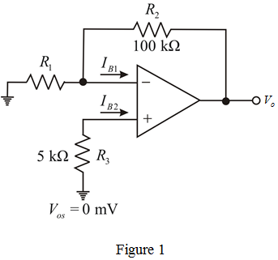

Calculate the value of resistor from the gain expression.
from the gain expression.
The gain of non-inverting amplifier is,

Substitute 10 for  , and
, and  for
for  in the equation.
in the equation.
Consider the following non-inverting amplifier circuit.

Calculate the value of resistor from the gain expression.
The gain of non-inverting amplifier is,
Substitute 10 for , and for in the equation.
Calculate the input bias currents.
And,
Calculate the output voltage for and .
Calculate the output voltage for and .
Therefore, the range of the output voltage is .
The resistance  should be made equal to the parallel equivalent of
should be made equal to the parallel equivalent of and
and .
.
To make the effective resistance is  to add
to add  resistor to the positive input terminal of the non-inverting amplifier.
resistor to the positive input terminal of the non-inverting amplifier.
Calculate the resulting output voltage.
Therefore, the output voltage, is .